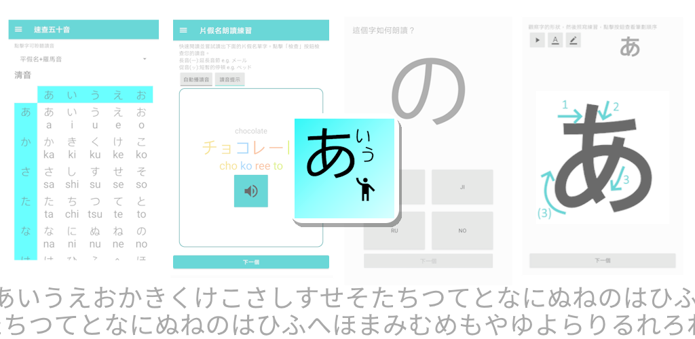

(2024/10/18更新) 在眾多學日文的管道中，我們特別挑選了一款優秀的日文學習APP，這款APP能幫助你掌握50音，在日文自學的路上助你一臂之力。無論你的日文水平如何，這款APP都將成為你自學之路上的得力助手，讓學習日文變得更加輕鬆愉快！
日語學習的方式正在迎來一場革命。隨著科技的飛速發展，人們學習語言的模式也隨之改變。而在眾多學習方法中，使用專為日語學習而設計的APP已成為現代人的首選。這些應用程式不僅提供極高的靈活性，還能夠根據個人需求定制學習計劃，並通過豐富的互動練習和即時反饋使日語學習變得更加高效和有趣。無論身處何地，只要手機在手，您都可以隨時隨地進行日語學習。這種學習方式尤其適合於現代忙碌的生活節奏，讓學習日語不再受時間和地點的限制。
輕鬆上手的入門 App：50音學日文
不熟悉日文平假名、片假名、漢字、濁音、拗音？聽到日文單字卻沒法快速想起讀音和寫法？沒有合適字帖教材對照練習？自學背誦五十音怎麼記也記不住嗎？自學日語50音要怎麼學？
透過默書、讀、寫法、發音等練習的全方位教學方式，提供字帖卡練習寫法、按照五十音順的完整五十音圖，有發音平假名表、片假名表供對照，這些圖表教材加深對五十音的理解和記憶。50音相當日文的字母，學日語不用背誦，學完50音後讓你輕鬆掌握日本語！透過基礎默書，依照筆劃默寫提升您的記憶力和書寫能力，讓自學日文學習變得輕鬆而快速。
【「50音學日文」功能特色】：
1. 完整五十音列表：提供完整的五十音圖表，包括平假名表、片假名表，清晰呈現所有50音的字母，包含日文五十個音節的寫法、發音和平假名片假名對照，以及其濁音、半濁音和拗音，讓您可隨時快速地查看自學，迅速掌握每個音節的發音和寫法。
2. 五十音假名字帖：提供筆劃教學、精美的字帖，讓您透過在字帖上按照筆劃進行寫法練習，輕鬆記憶每個字母的書寫形式，書寫時亦有發音、筆劃提供，為之後默寫做準備。
3. 辨認五十音假名：不用背誦口訣，遊戲化的練習模式，配合完整假名表對照讓您快速辨認平假名、片假名，自學聽辨日文每個音的正確發音。無須日文鍵盤。
4. 五十音假名默書：在字帖練習之後，可以透過默書練習默寫，讓您更完整深入地記憶日語假名和熟悉50音的書寫形式和發音，透過聽寫默書加強對寫法的認識和辨認度。
5. 小測：考驗你對50音字母的基礎熟悉度，通過默書默寫的考驗。
「50音學日文」，助你即使自學亦能打下堅實的日文基礎，快速學好基本功，實現你的日文學習目標！
應用名稱：50音學日文 - 學習日語五十音發音默寫假名字帖練習不用背誦
適用對象：日文初學者
語言：中文、英文，多語言支持
推薦指數：
下載連結：Google Play連結
無論您是兒童還是學生，自學日語還是有日文老師指導，這軟件使你不用背誦，是日文初學者的您必用必學的自學日語學習工具！下載這個簡單的軟件「50音學日文」之後，筆劃、字帖寫法、默書、辨認、聆聽發音，讓你快速熟習50音字母！